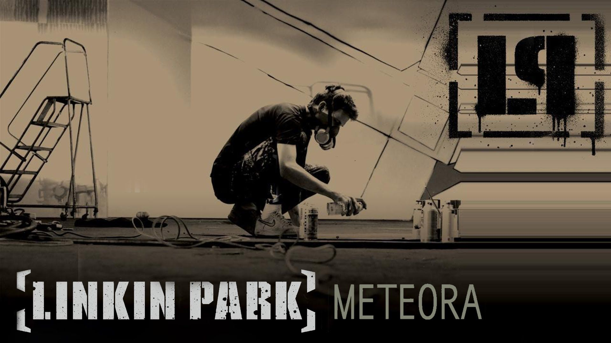
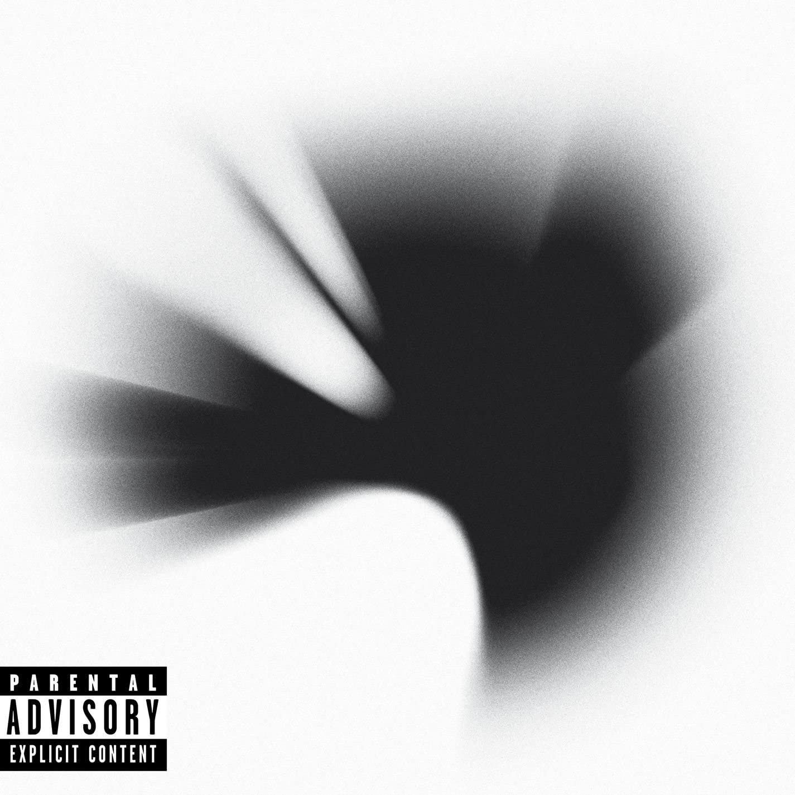
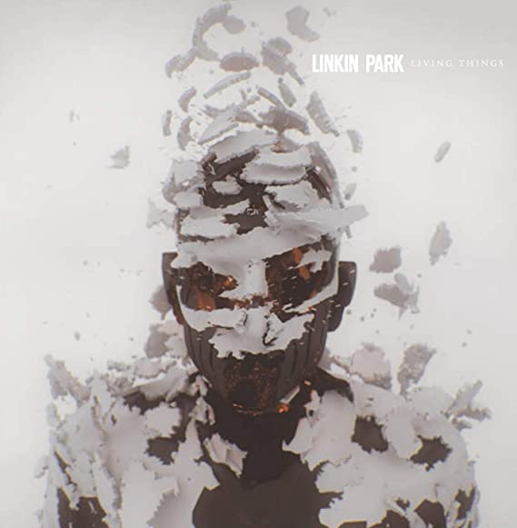
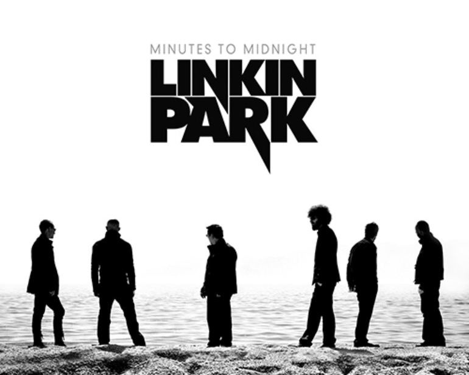
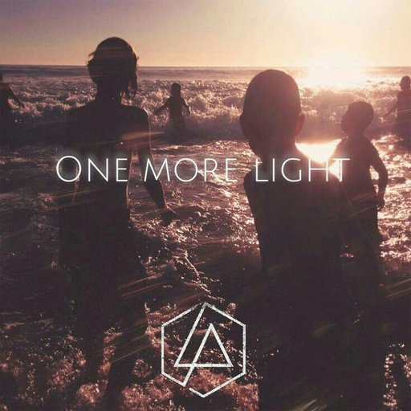

História Chester Bennington
Chester nasceu em Phoenix, Arizona, mas mudou-se algumas vezes para cidades no Estado do Arizona. Começou a treinar a voz aos 13 anos de idade. Sua Maior influência foi seu irmão mais velho, Brian, que curtia as bandas Loverboy, Foreigner, Rush e Led Zeppelin. Quando Chester era novo, cantava em torno da casa, sonhando que ele era o quinto membro do Depeche Mode. Ainda menino, foi vítima de abuso sexual, procurando fugir da realidade começou a usar drogas, mas consegui se curar aos 20 anos de idade, para ele esse foi o momento mais emocionante de sua vida. Quando se casou com Samantha, Chester não tinha dinheiro para comprar uma aliança de noivado e seu amigo Sean tinha uma loja de tattoos e fez de graça uma tatoo em forma de anéis. Infelizmente no dia 20 de Julho de 2017, Chester foi encontrado morto. Fontes da polícia de Los Angeles contaram ao site americano “TMZ” que o vocalista do Linkin Park, Chester Bennington, usou um cinto preso à porta do banheiro para se enforcar, em condições semelhantes às do suicídio do grande amigo Chris Cornell. O líder do Soundgarden também tirou a própria vida em maio, o que teria aguçado a depressão de Chester.
História do Linkin Park
Linkin Park é uma banda norte-americana de rock formada em 1996 em Agoura Hills, na Califórnia. A banda é formada por Chester Bennington (†) e Mike Shinoda (vocalistas), Joseph Hahn (Dj), Rob Bourdon (baterista), Brad Delson (guitarrista) e Dave Farrel (baixista). Linkin Park lançou seu primeiro álbum “Hibrid Theory” em 2000, que se tornou o álbum mais vendido de 2001. Recebeu um Grammy de Melhor Performance, além de indicações para o melhor álbum de rock e Melhor Revelação. O segundo álbum “Metera” foi classificado no topo na lista do Billboard 200. Em 2003 a banda Linkin Park foi nomeada pela MTV2 a sexta maior banda da era de videoclipes e também a terceira melhor banda, atrás de Oasis e Coldplay. O terceiro álbum de estúdio “Minutes to Midnight”, atingiu o topo das paradas e foi o disco mais vendido em 2007. Em 2010, a banda lançou “The Tousand Suns”, que logo se tornou líder em vendas em mais de quinze países. Em 2014 a banda Linkin Park lançou “The Hunting Party”, que reúne todos os elemento e gêneros dos trabalhos anteriores. Entre as músicas mais famosas do Linkin Park estão: Bum it Down, In the End, A Place For My Head, Faint e Living Things.
Músicas mais conhecidas da banda
Burn It Down
Lançamento: 16 de abril de 2012
Produção: Rick Rubin, Mike Shinoda
Composição: Chester Bennington, Mike Shinoda
In The End
Lançamento: 20 de novembro de 2001
Produção: Don Gilmore
Composição: Linkin Park
Numb
Lançamento: 8 de setembro de 2003
Produção: Don Gilmore, Linkin Park
Composição: Linkin Park
What I've Done
Lançamento: 2 de Abril de 2007
Produção: Rick Rubin, Mike Shinoda
Composição: Linkin Park
Castle Of Glass
Lançamento: 2 de fevereiro de 2013
Produção: Rick Rubin, Mike Shinoda
Composição: Linkin Park
New Divide
Lançamento: 18 de maio de 2009
Produção: Mike Shinoda
Composição: Linkin Park
Principais álbuns

Meteora
Lançamento: 25 de março de 2003
Produção: Don Gilmore, Linkin Park
Duração: 36:43
Principais singles do álbum

A Thousand Suns
Lançamento: 14 de setembro de 2010
Produção: Rick Rubin, Mike Shinoda
Duração: 47:56
Principais singles do álbum

Living Things
Lançamento: 26 de junho de 2012
Produção: Rick Rubin, Mike Shinoda
Duração: 36:59
Principais singles do álbum

Minutes To Midnight
Lançamento: 14 de maio de 2007
Produção: Rick Rubin, Mike Shinoda
Duração: 43:23
Principais singles do álbum

One More Light
Lançamento: 19 de maio de 2017
Produção: Brad Delson, Mike Shinoda
Duração: 35:19
Principais singles do álbum